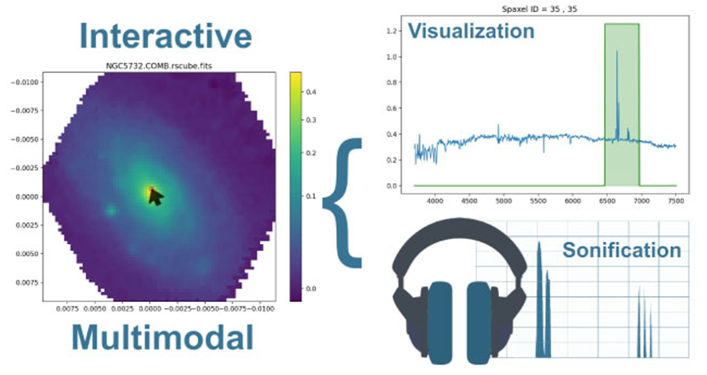
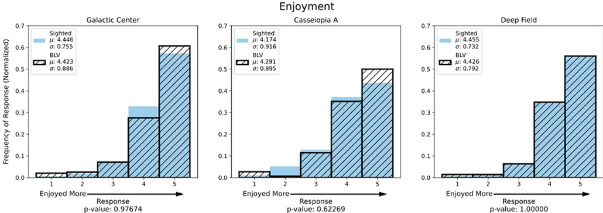

Our Book Series: Placeholder
Placeholder
Astronomy and Music
Sonification
Sonification is the transformation of astronomical data into sound or music.
Data from celestial bodies, like gravitational waves, are mapped and analyzed.
Brightness → loudness, frequency → pitch, temporal changes → rhythm or tempo, etc.
Use software (e.g. Python libraries, MIDI synthesizers, DAWs) to render sound based on the mappings
Adjust musical aspects (e.g. harmonic scales, instrument types) to enhance clarity, preserve scientific meaning, or convey emotion
Result is an audible representation of data that reveals patterns which might be hard to detect visually
(Galindo et al., 2024)
Sonification: Impacts and Applications
Scientific and Analytical Impact:
Accessibility and Inclusion:
Public Engagement:
(Adrián García Riber et al., 2024)
(NASA, 2020)

An example workflow of sonification.
[Interactive multimodal integral field spectroscopy] Multimodal UI of galaxy data
[A Universe of Sound: processing NASA data into sonifications to explore participant response]
Over
100
sonification projects noted in Nature Astronomy (2022)
NGC 1275 sonification garnered
2,000,000,000+
plays
Sonification projects reported
thousands
of times in media
Sonification projects have elicited
thousands
of emotional responses from the public
Cultural Foundations
The Melanesian people inhabit an archipelago of islands on the Torres Strait, indigenous to Australia.
Their culture revolves around astronomy, especially the moon.
Lunar phases symbolize in a dance called Gedge Togia, which means "rising over home"
The cultural connection they have between islands represents how astronomy and music brings communities of different backgrounds together.
Celestial bodies inspire music and dance and enforce way of life in the modern age as well.
We can utilize astronomy and music to uplift and create community.
(Hamacher et al., 2017)
The Stars of Tagai: Act as custodians, enforce cultural connection, law, and the cycle of life

A map of the Torres Strait, detailing inhabited islands.

Astronomical dance machines. A: Titui, B: Southern Cross, C: The Tagai, D: Comet
Asteroseismology
Stars produce sound waves internally, caused by turbulent convection in their outer layers.
They expand and contract, creating different frequencies.
Large stars produce low frequencies, and small stars produce high frequencies.
The Doppler Effect measures shift in light wavelengths and can be applied to other scenarios as well. A real life example is the changing pitch of an ambulance siren as it moves past you.
Space telescopes, such as Kepler and TESS, measure brightness changes over time.
Asteroseismology allows for exoplanets to be characterized for habitality, star age, size, and mass. Planet detection is achieved through asteroseismology.
(NASA, 2018)
(GONG, 2025)
Musical Impact
Many musical compositions reference astronomy. Both classical music (not to be confused with the Classical era) and contemporary (pop) music often reference astronomical objects, whether they have lyrics or not.
Perhaps the most famous example of a classical, non-lyrical piece, is The Planets by Holst. Each of the seven musical works utilize different moods to represent each planet. For example, I. Mars, the Bringer of War is in a fast march style, utilizing dissonance to signify the Roman god of war. In contrast, II. Venus, the Bringer of Peace utilizes a Dorian, calming musical mode. More examples of classical pieces referencing astronomy include Beethoven’s Moonlight Sonata, Debussy’s Au Clair de Lune, and Mozart’s Symphony No. 41 in C-Major Jupiter. Antonin Dvorak’s Song to the Moon characterizes the moon as a being who can see all and is seen by all.
Pop music examples introduce the greater usage of songwriting with lyrics. Examples include Danny Elfman’s “Moon Dance”, Don M’s “Cassini’s Theme”, David Bowie’s “Life On Mars”, and Soundgarden’s “Black Hole Sun”. Each work interprets celestial objects in different ways, some using light bells, quietly plucked strings, while others use power chords and strong music. Many of the lyrics within use astronomical metaphor and setting, but do not tend to lean into the scientific aspect of astronomy. a-ha’s “White Dwarf” is a unique piece in which H-R diagrams are referenced.
AstroCapella is described as “a marriage of astronomy and music, developed by astronomers and educators and professionally recorded by the ‘rocking’ a cappella group The Chromatics”. The group demonstrates the possibility of merging both the science of astronomy and emotion into song.
Poetry prevails in the world of astronomy and music. Utilizing astronomical objects in a song is like an inspirational tool, to project the songwriter’s emotions in a more effective way. Astronomical metaphor and setting mostly serves as a tool for emotion, but can also demonstrate the scientific field of astronomy. Pop music demonstrates the possibility of merging both the science of astronomy and emotion into song.
(Wang, 2006)
Examples of musical pieces referencing astronomy, including classical, jazz, and pop.

An example of an H-R diagram, which diagrams stars' temperatures against their luminosity.
Astronomy and the Human Body
Gravity and the Human Body
Microgravity in space flight causes blood redistribution up to the brain.
Effects include space motion sickness, cardiovascular changes, the weakening of muscles and bones, lowered physical fitness, and Space-associated Neuro-ocular Syndrome, in which the eye is affected negatively.
Source
Radiation
Acute effects include acute radiation sickness, decreased white blood cell count, and vomiting and nausea.
Long-term effects include cancer from radiation, seeing light flashes, and negatively affected reproductive cells.
Noise exposure and vibration may lead to hearing loss. Dust particles also negatively affect the body.
Decreased vitamin D occurs as a result from no sunlight. Digestive disorders affect the gut microbiome, and a weakened immune system increases inflammation.
(Tomsia et al., 2024)

Directions of future research on the impact of long-term space flights on the human body.
Psychology and Stress
Stress and fatigue occurs from being on missions. The hormonal stress response may play a role in physical effects from space travel.
Isolation may cause mental disorders, such as anxiety and depression. Isolation affects the human body immensely adversely.
The high cognitive demand of space travel exacerbates stress and pre-existing mental conditions.